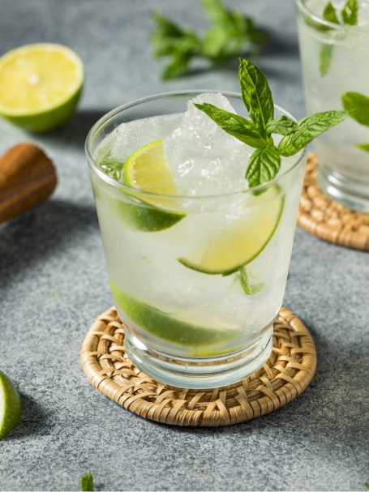

Le Caïpirinha est un cocktail brésilien à base de cachaça, de sucre et de citron vert. Il est rafraîchissant et parfait pour les chaudes journées d'été.
Découvrir d'autres cocktails

Retour à la page du Pornstar martini